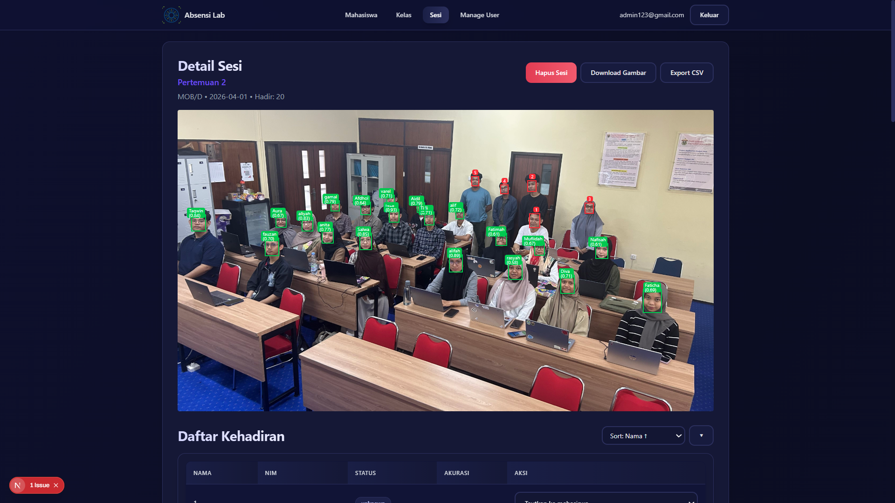
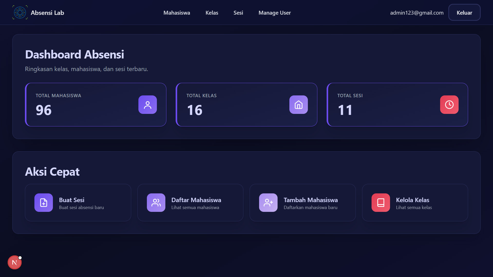
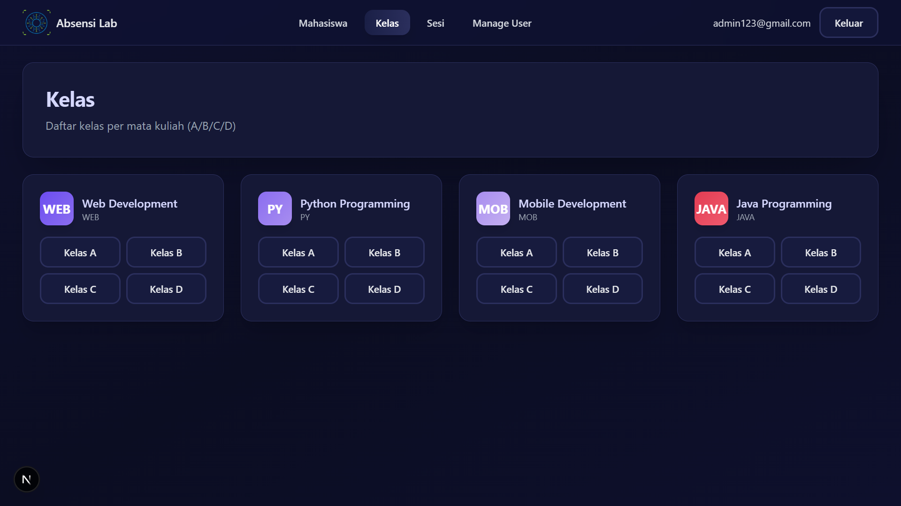
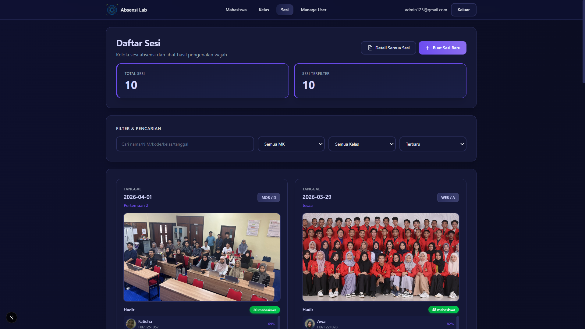

Sistem absensi laboratorium berbasis web menggunakan face recognition. Admin membuat sesi kelas dengan foto rombongan, dan sistem otomatis mendeteksi setiap wajah, mencocokkannya dengan roster mahasiswa terdaftar, lalu mencatat kehadiran — dengan review manual untuk wajah yang belum terkenali.
| Frontend | Next.js, React, TypeScript, Tailwind CSS |
| Backend | FastAPI (Python) |
| Face Recognition | MTCNN (detection) + InceptionResnetV1 / FaceNet (512-d embeddings), cosine similarity matching |
| Database | Supabase (PostgreSQL + pgvector) |
| Media | Cloudinary |
| Auth | JWT + bcrypt |



